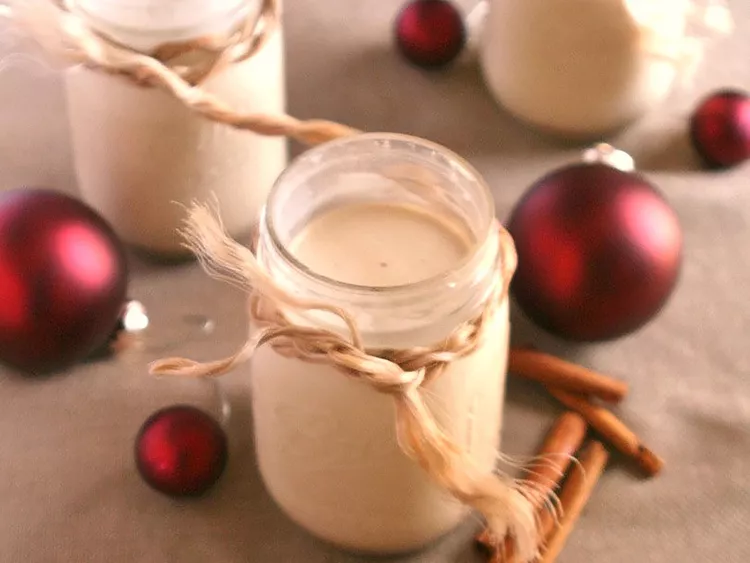
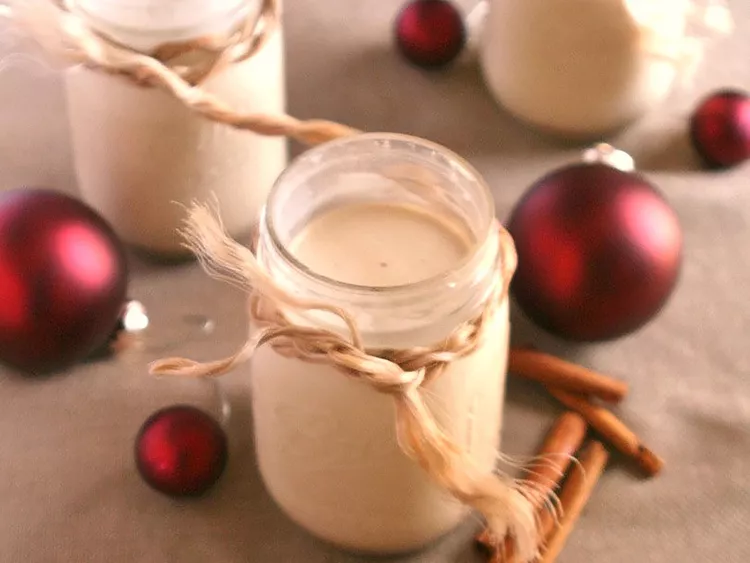

Description
Homemade eggnog is the perfect way to ring in the holiday season. This eggnog recipe is rich, creamy, and perfectly festive.
Ingredients:
- Milk and light cream
- Spices and seasonings:cinnamon, cloves, vanilla extract, and nutmeg
- Egg yolks
- Sugar
- Rum (optional)
Directions:
- Heat the milk, cinnamon, cloves, and a dash of vanilla. Boil, then remove from heat.
- Whisk the egg yolks, then whisk in the sugar.
- Gradually whisk the hot milk mixture into the egg mixture.
- Cook the mixture over medium heat until thick, then strain to remove the cloves.
- Stir in the cream, rum, remaining vanilla, and nutmeg. Refrigerate overnight.